阅读词表
| 词条 | 拼音 | 类型 | 说明 |
|---|---|---|---|
| 人祭 | rén jì | concept | 以人作为祭品的祭祀行为。 |
| 殷墟 | yīn xū | site_or_culture | 晚商都邑遗址，甲骨卜辞的重要出土地。 |
| 祭祀坑 | jì sì kēng | concept | 考古遗址中用于祭祀、掩埋祭品或尸骨的坑穴。 |
| 献祭 | xiàn jì | concept | 向神灵、祖先等奉献祭品。 |
| 人牲 | rén shēng | concept | 被用于祭祀或献祭的人。 |
| 殷商 | yīn shāng | concept | 商代后期以殷墟为中心的商王朝阶段。 |
| 戍嗣子 | shù sì zǐ | person | 青铜器铭文所见族长或贵族名号。 |
| 朋 | péng | text | 古代贝币单位，两系为一朋。 |
| 纣王 | zhòu wáng | person | 商末王，文中讨论其暴虐和人祭。 |
| 羌 | qiāng | text | 甲骨文中常见族称，商王祭祀常用羌人。 |
| 后冈H10 | hòu gāng H10 | site_or_culture | 殷墟后冈圆形祭祀坑编号，文中复原其献祭过程。 |
| 王陵区 | wáng líng qū | concept | 王室墓葬和祭祀坑集中的区域。 |
| 杀祭 | shā jì | concept | 通过杀人或杀牲举行的祭祀。 |
| 阿兹特克 | ā zī tè kè | site_or_culture | 中美洲古代文明，文中讨论其人祭。 |
| 海贝 | hǎi bèi | artifact | 贝壳，古代可作装饰、随葬品或货币。 |
| 卜辞 | bǔ cí | text | 占卜时刻写或记录的辞句。 |
| 朱砂 | zhū shā | rare_word | 红色矿物颜料，古代常用于礼仪和葬俗。 |
| 货贝 | huò bèi | artifact | 作为货币使用的贝。 |
| 铜鼎 | tóng dǐng | bronze_item | 青铜鼎，古代炊煮或礼仪重器。 |
| 殷都 | yīn dū | site_or_culture | 晚商都城，通常指安阳殷墟。 |
| 铭文 | míng wén | text | 器物上铸刻或刻写的文字。 |
| 郭沫若 | guō mò ruò | person | 现代学者，文中涉及其对后冈H10的判断。 |
| 甲骨卜辞 | jiǎ gǔ bǔ cí | text | 刻写在龟甲兽骨上的占卜辞句。 |
| 《合集》 | hé jí | text | 《甲骨文合集》的简称。 |
| 铜斝 | tóng jiǎ | bronze_item | 青铜斝，古代三足酒器。 |
| 填土 | tián tǔ | concept | 填入坑穴或遗迹中的土层。 |
| 坑底 | kēng dǐ | concept | 坑穴底部。 |
| 高亨 | gāo hēng | person | 文史学者，文中引用其对《易经》的解释。 |
| 玛雅 | mǎ yǎ | site_or_culture | 中美洲古代文明。 |
| 含章 | hán zhāng | text | 《易经》坤卦爻辞，文中据高亨释为“翦商”。 |
| 人殉 | rén xùn | concept | 以人随葬或陪葬的行为。 |
| 坑壁 | kēng bì | concept | 坑穴侧壁。 |
| 灰坑 | huī kēng | concept | 遗址中含灰土、废弃物或祭祀遗存的坑穴。 |
| 玄奘 | xuán zàng | person | 唐代僧人，文中涉及其遭遇人祭险境。 |
| 卯 | mǎo | text | 甲骨卜辞中一种剖开悬挂人牲或牲畜的祭祀方式。 |
| 可贞 | kě zhēn | text | 可通过占卜预测或问卜。 |
| 翦商 | jiǎn shāng | text | 剪除商朝，文中为全书核心主题。 |
| 青铜礼器 | qīng tóng lǐ qì | bronze_item | 用于礼仪或祭祀的青铜器。 |
| 鬲 | lì | artifact | 古代陶制或青铜炊器，常见袋状足。 |
| 戍嗣子鼎 | shù sì zǐ dǐng | bronze_item | 后冈H10出土青铜鼎，铭文记载商王赏赐。 |
| 胯部 | kuà bù | concept | 腰与大腿之间的部位。 |
| 捆绑 | kǔn bǎng | concept | 用绳索等束缚身体。 |
| 周公旦 | zhōu gōng dàn | person | 西周初年政治家，文中指其取缔人祭风俗。 |
| 周昌 | zhōu chāng | person | 周文王之名。 |
| 克里特岛 | kè lǐ tè dǎo | place | 地中海岛屿，文中涉及古代人祭遗迹。 |
| 族徽 | zú huī | text | 族群标识，常见于商周青铜器铭文。 |
| 突伽天神 | tū jiā tiān shén | text | 玄奘传记中土著祭祀对象名。 |
| 笄 | jī | rare_word | 古代束发用的簪子。 |
| 铜爵 | tóng jué | bronze_item | 青铜爵，古代酒器。 |
| 陶鬲 | táo lì | artifact | 陶制鬲，古代炊煮器。 |
| 宫殿区 | gōng diàn qū | concept | 都邑中宫殿和王室活动集中的区域。 |
| 俯身 | fǔ shēn | concept | 身体向前伏下。 |
| 红烧土 | hóng shāo tǔ | concept | 经火烧后变红变硬的土，常见于考古遗迹。 |
| 肢解 | zhī jiě | concept | 将肢体切割分解。 |
| 奠基 | diàn jī | concept | 建筑开始时的基础仪式或基础施工。 |
| 父癸 | fù guǐ | person | 商代祭祀对象名，文中见于戍嗣子鼎铭。 |
| 王国维 | wáng guó wéi | person | 现代学者，文中引用《说珏朋》。 |
| 米诺斯 | mǐ nuò sī | site_or_culture | 克里特岛青铜时代文明。 |
| 甲骨刻辞 | jiǎ gǔ kè cí | text | 刻在甲骨上的文字记录。 |
| 卦爻辞 | guà yáo cí | text | 《易经》中解释卦、爻的辞句。 |
| 鼎铭 | dǐng míng | text | 铸刻在鼎上的铭文。 |
| 拦腰 | lán yāo | rare_word | 从腰部横截。 |
| 蜷曲 | quán qū | rare_word | 身体弯曲缩成一团。 |
| 璜 | huáng | rare_word | 半璧形玉器。 |
| 骨笄 | gǔ jī | artifact | 骨制簪笄，用于束发。 |
| 玉璜 | yù huáng | artifact | 半璧形玉器。 |
| 铜戈 | tóng gē | bronze_item | 青铜戈，古代横刃长柄兵器。 |
| 铜刀 | tóng dāo | bronze_item | 青铜刀。 |
| 铜镞 | tóng zú | bronze_item | 青铜箭头。 |
| 裘卫盆 | qiú wèi pén | artifact | 西周中期青铜器，铭文涉及贝币和土地交换。 |
| 生土层 | shēng tǔ céng | concept | 未经人类扰动的天然土层。 |
| 坑口 | kēng kǒu | concept | 坑穴开口处的形状和范围。 |
| 蜷身 | quán shēn | concept | 身体蜷缩的姿势。 |
| 割喉 | gē hóu | concept | 割断喉部。 |
| 下颌 | xià hé | concept | 下颌部位。 |
| 屈膝 | qū xī | concept | 弯曲膝部。 |
| 角斗士 | jué dòu shì | concept | 古罗马竞技表演中的搏斗者。 |
| 人文主义 | rén wén zhǔ yì | concept | 以人和现实生活为中心的思想立场。 |
| 酋邦 | qiú bāng | concept | 介于部落和国家之间的复杂社会组织。 |
| 人奠基 | rén diàn jī | concept | 将人夯筑在地基内作为建筑奠基祭祀。 |
| 巫术 | wū shù | concept | 借助神秘仪式影响现实的信仰行为。 |
| 六十四卦 | liù shí sì guà | 项目词典 | 由上下两个八卦重叠形成的六十四种六爻卦象。 |
| 华夏文明 | huá xià wén míng | 项目词典 | 在中国早期历史中逐渐形成和发展的文明传统。 |
| 大司空村 | dà sī kōng cūn | 项目词典 | 殷墟东侧重要商代聚落。 |
| 宗教改革 | zōng jiào gǎi gé | 项目词典 | 文中指试图以埋藏器物替代杀人杀牲的祭祀变革。 |
| 长江流域 | cháng jiāng liú yù | 项目词典 | 长江水系覆盖的广大地区。 |
| 上颌骨 | shàng hé gǔ | 项目词典 | 上颚骨，文中用于描述斩首痕迹。 |
| 周文王 | zhōu wén wáng | 项目词典 | 周族领袖姬昌。 |
| 周武王 | zhōu wǔ wáng | 项目词典 | 周发，灭商之君。 |
| 孔颖达 | kǒng yǐng dá | 项目词典 | 唐代经学家，《周易正义》编纂者之一。 |
| 铜礼器 | tóng lǐ qì | 项目词典 | 用于礼仪或祭祀的青铜器。 |
| 上帝 | shàng dì | 项目词典 | 商周宗教中的最高神。 |
| 中人 | 项目词典 | 宦官。 | |
| 何尊 | hé zūn | 项目词典 | 西周青铜尊，铭文有“宅兹中国”。 |
| 儒家 | rú jiā | 项目词典 | 以孔子思想及相关经典传统为核心的学派。 |
| 六经 | liù jīng | 项目词典 | 传统所称《诗》《书》《礼》《乐》《易》《春秋》。 |
| 冶铜 | yě tóng | 项目词典 | 从铜矿石中冶炼铜料的技术。 |
| 周公 | zhōu gōng | 项目词典 | 周公旦，武王之弟。 | 周公旦，周初政治家。 |
| 周易 | zhōu yì | 项目词典 | 以《易经》及其传文构成的古代经典。 | 《易经》与后世《易传》合称的经典。 |
| 商王 | shāng wáng | 项目词典 | 商朝王。 |
| 土著 | tǔ zhù | 项目词典 | 本地原有居民或族群。 |
| 夯筑 | hāng zhù | 项目词典 | 用夯打方式筑成墙体或台基。 |
| 孔子 | kǒng zǐ | 项目词典 | 春秋时期思想家、教育家，儒家学派的重要奠基者。 |
| 尚书 | shàng shū | 项目词典 | 儒家经典之一，文中引用《盘庚》篇。 | 保存上古政治文献和诰命的儒家经典。 |
| 成王 | chéng wáng | 项目词典 | 周成王，武王之子。 |
| 战俘 | zhàn fú | 项目词典 | 战争中捕获的人。 |
| 方伯 | fāng bó | 项目词典 | 商周时期受命统领一方的首领。 | 受命统领一方的首领。 |
| 易经 | yì jīng | 项目词典 | 文王卦爻辞体系，书中用以讨论翦商谋略。 | 文王卦爻辞体系。 | 以六十四卦及卦爻辞为主体的古代经典。 |
| 春秋 | chūn qiū | 项目词典 | 孔子时代相关的编年史经典。 |
| 武王 | wǔ wáng | 项目词典 | 周武王。 |
| 殉葬 | xùn zàng | 项目词典 | 以人或物随葬。 |
| 爻辞 | yáo cí | 项目词典 | 解释每一爻吉凶和意义的文字。 |
| 王权 | wáng quán | 项目词典 | 王的政治统治权力。 |
| 疆域 | jiāng yù | 项目词典 | 国家或政权控制、影响的地域范围。 |
| 盘庚 | pán gēng | 项目词典 | 商王名，以迁都殷地著称。 |
| 祭品 | jì pǐn | 项目词典 | 祭祀时献给神灵或祖先的物品。 |
| 窖穴 | jiào xué | 项目词典 | 地下储藏坑穴。 |
| 粟米 | sù mǐ | 项目词典 | 小米；北方旱作农业的重要作物。 |
| 羌人 | qiāng rén | 项目词典 | 西方族群，常见于商代卜辞。 |
| 诗经 | shī jīng | 项目词典 | 中国古代诗歌总集，儒家经典之一。 |
| 遗存 | yí cún | 项目词典 | 古代活动留下的遗物、遗迹或现象。 |
| 酋长 | qiú zhǎng | 项目词典 | 部落或地方共同体的首领。 |
| 陶寺 | táo sì | 项目词典 | 山西襄汾一带龙山时代重要遗址。 |
青铜器词表
| 器名 | 拼音 | 类型 | 说明 |
|---|---|---|---|
| 斝 | jiǎ | bronze_item | 古代青铜酒器，圆口三足。 |
| 鬲 | lì | bronze_item | 古代煮食炊器。 |
| 爵 | jué | bronze_item | 古代酒器，也引申为爵位。 |
| 豆 | dòu | bronze_item | 古代盛肉或食品的高足盘形器。 |
| 戈 | gē | bronze_item | 古代横刃长柄兵器。 |
| 镞 | zú | bronze_item | 箭头。 |
章节导读札记
| 主题 | 札记 | 操作 |
|---|---|---|
| 暂无章节导读札记 | ||
用户札记
| 类型 | 页 | 内容 |
|---|---|---|
| 暂无用户札记 | ||
原书阅读器页 015原书物理 PDF 页 013印刷页 1
引子
本书是关于中国上古时代的文明起源的，始自新石器时代末期（4000余年前），终于商周易代（殷周革命），时间跨度一千余年。
为此，须先从上古时代的人祭说起。人祭，就是杀人向鬼神献祭。关于上古的人祭风俗，直到近百年现代考古学兴起，发掘出殷商的大量人祭遗址及商王占卜献祭的甲骨刻辞，才进入现代人的视野中。
至于这种风俗是如何退出历史和人们的记忆的，大多数学者似乎默认，它是逐渐、自然、不知不觉地退场的。一种代表性的说法是，殷商前中期盛行人祭，到晚期就很少了。这方面的代表著作如黄展岳的《古代人牲人殉通论》，介绍了殷墟三座多人祭祀坑，认为它们都属于殷墟前期。但查阅这三座坑的发掘报告便可知，有两座属于殷墟末期，一座时期不详，根本无法确定是否属于殷墟前期。[[fn:1]]
根据本书的研究，人祭的消亡和周灭商有直接关系。在周武王死后，辅政的周公旦取缔了商人的人祭风俗，并消除了关于人祭的文字记录和历史记忆；周公此举可能是为了防止其死灰复燃，执行得也比较成功，于是留下了三千年的记忆空白。
再现上古时代的残忍与血腥，并不是一件开心的工作，却是绕不开的。下面，先来复原一场殷商最晚期的人祭仪式。
殷商最后的人祭
殷都宫殿区以东数百米的后冈，是一个很密集的商人聚居区。1959年，这里发掘出一座奇怪的“墓葬”，它和正常的商代墓很不一样，是水井一样的圆形而非长方形穴，坑内没有任何棺木痕迹，只有25具尸骨凌乱地堆叠在一起。伴随出土的，还有青铜礼器和兵器，以及纺织物、粮食等。
时任中国科学院院长的郭沫若推测，这是一处特殊的贵族墓葬，墓主可能生前犯了罪，不能享受正常的埋葬礼仪，但仍杀了24名奴隶以及用了贵重的铜器陪葬。[[fn:2]]
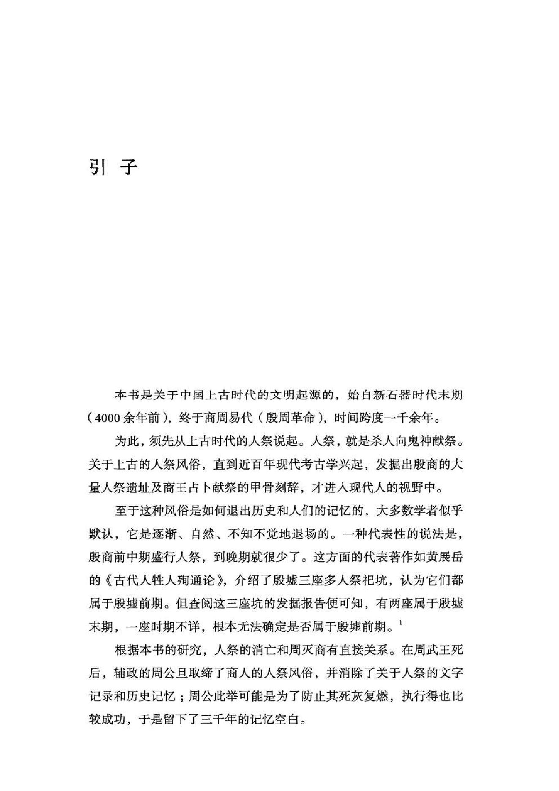
原书阅读器页 016原书物理 PDF 页 014印刷页 2
1960年，在整理这座“墓葬”的时候，考古工作者发现，第一次挖掘并没有挖到底，在半米深的土层之下还有第二层尸骨，共29具。[[fn:3]] 于是，便建了一座亭子为其提供保护。但有些考古学者心中还是难免有疑惑，是不是第二层尸骨之下还埋藏着什么。
1977年，又进行了第三次发掘，发现第二层尸骨之下还有半米厚的坚硬红褐土，然后是第三层尸骨，共19具。这一次才算挖到了底。也就是说，这座圆坑墓穴有三层，共掩埋了73具尸骨。发掘者认为，这应该不是墓葬，而是一座祭祀坑。
在后冈圆坑之前，殷墟王陵区和宫殿区已发掘上千座人祭坑，但大都是边长两三米的方形坑，一般埋十人左右（尸骨或人头），且只有一层，从未发现过多层人祭坑。
1959年发掘第一层时，根据出土铜器造型以及上面的铭文特征，有学者判断它属于西周早期。[[fn:4]] 后来，随着殷墟发掘日渐增加，人们才意识到，原来商代末期已经有这些造型的铜器和铭文——它属于殷商王朝谢幕前夕，很可能是纣王时代的一次隆重献祭仪式。
这座祭祀坑的发掘记录比较详细，从中可以发现整个献祭过程井然有序，包含着当时的商人对于高级别人祭礼仪的理解，而被杀戮者也给自己做了充足的准备。
让我们按时间顺序再现祭祀全过程，并通过分析诸多细节，复原祭祀场上曾经发生的一幕。
后冈祭祀圆坑编号H10[[fn:5]]，从深灰色的生土层中挖出，地表的坑口直径2.8米，向下稍有扩大，底部直径2.3米，全深2.8米，上面一半都是填土，三层尸骨都在下半截，分层清晰。可以说，从一开始，后冈H10圆坑就是为了隆重的献祭仪式建造的，虽然我们已经无法完全解读它蕴藏的理念。
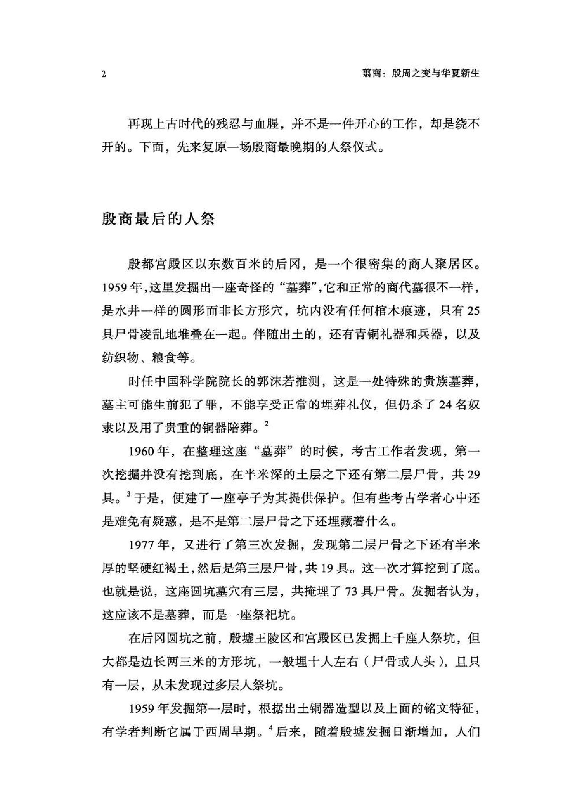
原书阅读器页 017原书物理 PDF 页 015印刷页 3
坑壁平整光滑，坑底平坦坚硬，应该被修整夯打过。主祭者先在坑底铺一层很薄的小石子和砂土，再垫一层二三十厘米厚的黄土。黄土中有被掩埋的碎片，是打碎了的几只陶制炊器和食器，如鬲、簇、罐。
然后开始杀人。第一轮杀了19人，身首完整的只有两具，被砍掉小腿或脚的有五具，单独的人头骨十枚、上颌骨一块、右腿一条。能分辨出有青年男子和女子各三名，成年男子两名，儿童四名，婴儿两名。四名儿童皆尸体不全，缺下半段：一名从小腿以下被砍去；一名从大腿以下被砍去；一名只有头骨；一名被斜向拦腰砍断，只剩上半身和右侧骨盆。两名婴儿都只有头骨。单独的上颌骨属于一名三十岁左右的女子，牙齿很整齐。一名二十岁左右的青年男子侧身蜷曲，朝上的右胯部有60枚海贝（商人用作钱币的货贝）[[fn:6]], 可能是用线穿起的一团或是装在腰间的布袋里的。此外，他的身下还有些散落的海贝。
尸体和头颅没有脸朝上的，或朝下，或侧方。这些迹象表明，杀祭先是在坑外进行，然后再把人头和残碎的尸体扔进了坑内。应该还有人在坑底负责调整，虽然未必堆放得十分整齐，但要保证尸体的脸部不能朝上。大部分死者的躯体并未被扔到坑里，所以坑内单独的人头较多。至于留在上面的尸身作何用处，且看后面的细节。
后冈H10第三层平面图[[fn:7]]（图）
第一轮杀人结束后，主祭者向坑内撒了一些朱砂（尸骨被局部染红），然后填土，这次填的是红褐色的土，厚半米多。接着开始第二轮杀人。
这次至少杀了29人，身首相连的尸骨有19具，单独的头颅9枚，没有头的身躯1具。尸体呈各种姿态，俯身、侧身、仰身、直身和蜷身的都有，单独的人头贴着坑壁东南侧连续摆放，脸朝下，头顶贴着坑壁。能分辨出有青年男子8人，儿童5人。
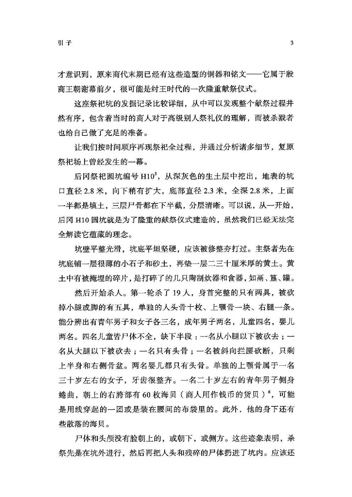
原书阅读器页 018原书物理 PDF 页 016印刷页 4
这一层随葬海贝的人更多。一名男青年胯部有两串，共31枚。编号27的尸骨，俯身，稍扭曲，身材较长，伸直后可能超过1.8米，胯部右侧有三堆海贝，分别是20枚、10枚、5枚，可能本是三串。此外，这三堆下面还有散落的16枚。
这层的儿童，除一人缺失下肢外，基本是完整的全躯，有一人乳牙尚未脱落，胸前挂一枚玉珠饰。
后冈H10第二层平面图（图）
有两名青年，编号为17号和21号，性别不详，姿势相同，伏地，朝东方跪拜，平行相隔1米左右，发掘者推测，这两人姿势过于规整，应是被捆绑造成的。21号头部右侧有一枚骨笄，自下而上插入，显示头发盘在头的右侧，可能是处死时发型被打乱了，右手臂佩一枚玉璜，手腕戴一枚穿绳的玉鱼，看来比较富贵且重视形象。和他平行伏跪的17号没有饰物。
第二轮杀人结束后，主祭者又向尸体抛撒了一层朱砂粉，再撒一层小卵石，大小介于豌豆和核桃之间，平均厚1厘米多，然后再把31件陶器送到坑内打碎——每件陶器的碎片分布很集中，不像是打碎后扔下去的。有些陶罐的内壁沾着粟米颗粒，有些表面还涂了朱砂。坑底堆积着很多死尸，已经不平整，坑内的作业者还特意把陶器放在较低洼的地方打碎，以使坑底相对平坦，然后再填入一层灰黄色土，厚约三五十厘米，混杂少量炭灰颗粒和红烧土颗粒，说明地面上正在烧火，可能是烧烤祭品，包括没有扔进坑内的躯体。和第一轮相比，第二轮死者的躯体保全的相对多一些。
后冈H10第一层平面图（图）
然后是第三轮杀人。这次杀了24人，全躯的尸骨15具，单独的人头7枚，无头的躯体2具，其中鉴定出青年男子6人、壮年男子3人和儿童4人。这时，坑已经被填满了一半，仅剩深度约1.5米，所以有些人可能是在坑内被处死的。比如，3号，四十岁左右，男子，背靠坑壁蹲坐，两手掩面，胸前有一串海贝，13枚，可能是被割喉或重击头部致死；一名三十岁左右的男子上半身趴在一只铜鼎（戍嗣子鼎）上，右手抓住鼎的口沿；11号，十六七岁，少男，双手掩面俯卧，腰部压着一件铜斝；8号，不明性别年龄，双手掩面，身体被肢解。
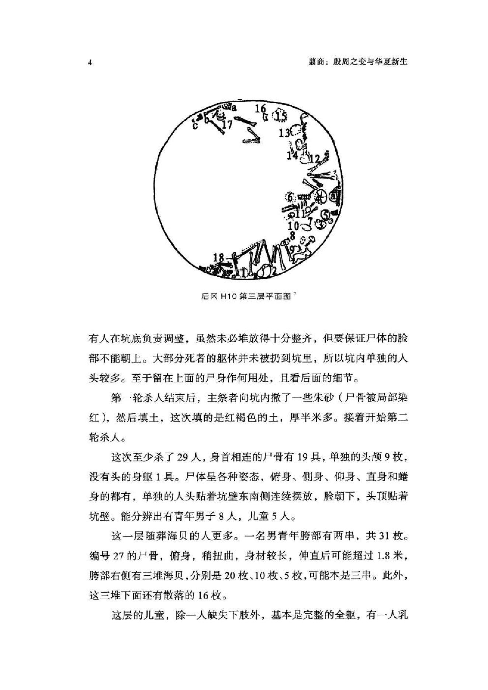
原书阅读器页 019原书物理 PDF 页 017印刷页 5
这一层携带海贝的死者更多。16号，左手腕挂一串，腰间挂两串，共100多枚；18号，十六七岁，少男，臀部有一麻布袋，里面装海贝300枚以上；17号，十八九岁，少男，只剩一颗头骨，口中含三枚贝。上古埋葬的死者往往口中含贝，大多是入殓时后人放入让死者带去彼岸世界的，但17号很可能是自己含进去的，看来杀人者并不在意他们的钱财，他只能照顾好自己的往生。这一层中还有好几处小堆的海贝，大都已经分不清主人。
所有的青铜器都在这一层。礼器有铜鼎、铜斝、铜爵各一件，兵器有铜戈两件、铜刀一件、铜镞一枚，不知名的小铜饰物一件。铜鼎上的铭文显示，它的主人名为“戍嗣子”。
这时已经是献祭仪式的尾声，估计坑内作业人员有些懈怠了，所以这一层中有两人是仰面姿势，其中15号下颌被砍落，前额上有明显的刀砍痕迹，应当是仰面躺倒后，被连砍数刀。[[fn:8]]
这层几乎所有的尸骨都被染成了红色，应该是第三轮杀人结束之后，主祭者向尸体上抛撒了较多的朱砂粉。坑内还有大量成捆的丝线、麻线、丝绸和麻布，以及一堆粟米，都被放在人头和尸身之间空出来的位置上。然后填土。这次填入的是掺杂大量炭灰、木炭块的灰色土，有的炭块直径10厘米，长4厘米，明显是烧过的树枝。填土中还混杂着大量烧过的骨头（报告没提及是人骨还是兽骨）和贝壳。这层灰土厚35—60厘米，应当是祭祀结束后的柴灰和垃圾。
在填入这层炭灰土的同时，主祭者杀掉了最后一个人：侧身蜷缩在坑东壁，身上撒了大量朱砂，尸骨被严重腐蚀，已无法分辨性别和年龄；身旁有一只陶鬲，似乎是随葬品。郭沫若推测，此人就是墓主、青铜器的主人“戍嗣子”，因为只有他被单独埋在最上面。但问题是，他的身边只有一只陶鬲，没有任何高价值随葬品，所以还无法完全确定。
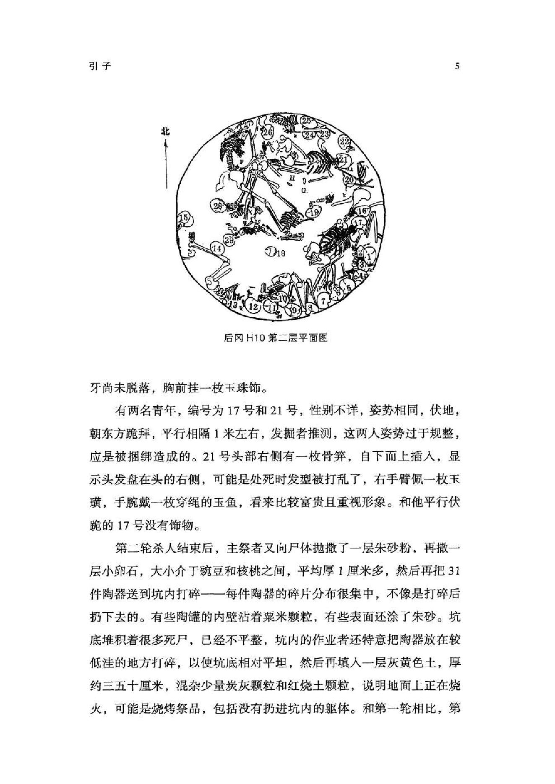
原书阅读器页 020原书物理 PDF 页 018印刷页 6
杀祭全部结束后，是最后的填埋工作。在炭灰土层的上面，是90厘米厚的块状红烧土层，夹杂少量陶器碎片，直到把坑填满。这些烧土块应当也是烧烤祭祀的产物。
以上就是这场杀人祭祀的过程。可以判断，这不是简单的屠杀。主祭者准备充分，从祭祀坑的挖掘和修整，到每一个杀祭步骤，比如尸身摆放、撒朱砂、填土、打碎陶器、摆放各种祭品，都执行得有条不紊。而且，地面上还在同步举办包含烧烤祭品在内的献祭仪式。这些都说明当时的人对举办此类祭祀活动已经很熟悉，有一套相对固定的操作流程。
发掘报告认为，死者都是奴隶。但从物品看，每层中都有人携带货贝（甚至成串的或是用麻布袋装的大量贝）或佩戴玉饰，应该是他们给自己准备的“随葬品”，显然，这种富裕程度不可能是奴隶。值得注意的是，杀人者并不觊觎死者的财物，大量作为钱币的货贝和高价值的青铜器被埋葬在了祭祀坑中。在殷墟的众多人祭坑中，这非常少见。[[fn:9]]
最上一层死者的身份最高，有一件象牙棒和五件象牙做的笄，更重要的，当然是贵重的青铜礼器和兵器，其中，铜鼎、铜斝、铜爵各一件，最大的是“戍嗣子鼎”，高近半米，重达21公斤多，底部有烟灰层，说明主人经常用它烹煮饭食。出土时，鼎口部有丝织物残留，大概是被丝绸裹着带进坑内的。
鼎内有较长的铭文，共三行，30字，记载的是某年九月的丙午这天，商王在一座大宫殿里赏赐戍嗣子货贝二十朋，为了纪念这荣宠，戍嗣子铸了这件祭祀父亲的鼎。
戍嗣子鼎及铭文拓本[[fn:10]]（图）："丙午，王赏戍嗣子贝廿朋，在原金。用作父癸宝鼎。唯王筑嬴大室，在九月。犬鱼。”
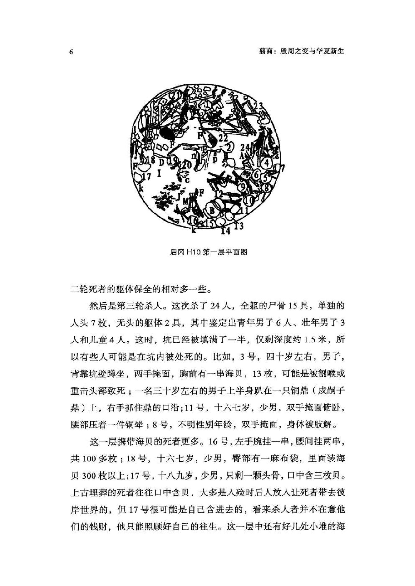
原书阅读器页 021原书物理 PDF 页 019印刷页 7
铭末“犬鱼”是由两个甲骨文象形字组成的族徽，主人自称“戍嗣子”，戍是他的名，嗣子可能代表他是本氏族的嫡传族长。
“犬鱼”的族徽在商代铜器里不太多见，甲骨卜辞里也没出现过，说明该族不是很显赫，被王召见一次已经足够荣幸，所以要专门铸一只大鼎来纪念。铜器的形制和铭文风格属于殷商末期，商朝灭亡的前夕。
朋，甲骨文作儿像一个人提着两串钱。王国维《说珏朋》云：“古制贝玉皆五枚为一系，二系一朋。”也就是说，一串五枚，两串十枚，十枚是为一朋。《合集》40073曰：“易（赐）贝二朋。”这说明在商代二朋就很拿得出手。[[fn:11]] 按照1975年陕西出土的西周中期裘卫盆铭文记载：“矩白庶人取堇章于裘卫。才八十朋。厥贾其舍田十田。矩或取赤虎两。鹿口两。口翰一。才廿朋。其舍田三田。”[[fn:12]] 按周制，百亩（约合今31.2亩）为一田，二十朋抵三田（约合今93.6亩）。
后冈H10被全面发掘后，祭祀坑特征得到公认，学界多已不再把它看作墓葬，但还是有些难以解释的现象：其一，人牲用了较多“随葬品”，如铜器、海贝、丝麻织物和粮食，而这在商代人祭坑中很少见到。其二，随葬的货贝、青铜器和玉饰像是属于死者的财物，玉饰戴在死者身上，货贝由死者成串或成袋携带，铜鼎和铜斝也是压在死者身下，而能拥有这些青铜礼器的，只能是商人贵族戍嗣子家族。
从上述特点看，郭沫若1961年的“墓主是贵族”的判断仍有可成立之处：后冈H10虽然是一座祭祀坑，但使用的人牲与众不同，并不是常见的战俘和奴隶，而是中级贵族戍嗣子家族的成员。所以，主祭者破例给了很多优待，比如，允许死者随身携带一些随葬品，往尸体上撒朱砂粉（夏商时代贵族的墓葬往往会撒朱砂），但在实际执行中，这些优待又落实得颇为草率，很多都是身首分离，尸身可能被献祭和烹煮分食。
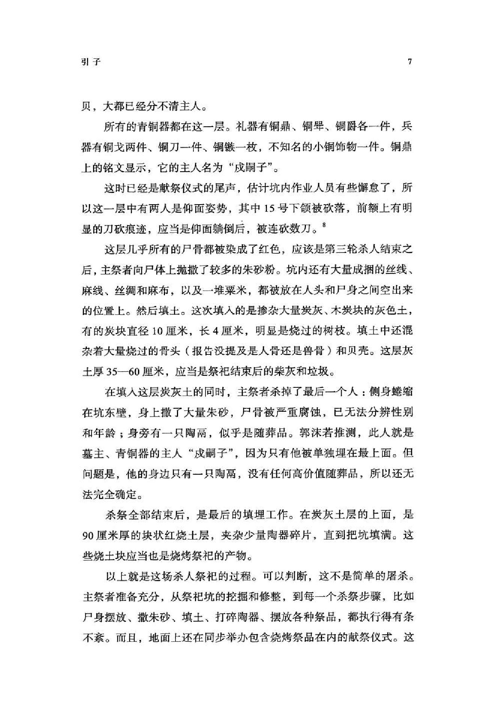
原书阅读器页 022原书物理 PDF 页 020印刷页 8
如果被献祭者是“戍嗣子”家族，那操办此次杀祭的就不大可能是其他贵族，因为哪怕是高级贵族，也没有把下级贵族满门诛杀献祭的权力。这只能来自王权。
又有两种可能。一是灭商后，周人对特定的商人贵族的杀戮。周人曾两次攻克殷都，第一次是武王灭商，第二次是周公平息叛乱，且不管是哪一次，这种可能性都不大，因为周人并不尊重商人的祭祀伦理，不会允许把高价值的货贝和青铜器带进祭祀坑，更不会如此认真细致地执行杀祭全过程。
二是商纣王授意的杀戮和祭祀。《史记》等史书记载，纣王曾经处死九侯、鄂侯、比干等商人贵族。按照商人的世界观，商王杀人和向神献祭几乎是一回事，特别是处死显贵成员，更是向诸神奉献高级祭品的难得的机会。
由此观之，后冈祭祀坑中的戍嗣子一家人可能也是被纣王杀戮献祭的。杀祭地点在戍嗣子的家宅或附近，操办和参加祭礼的是商朝贵族，给了死者一点宽待，但仍按照惯例烹食了很多被献祭的人，尤其是婴儿和幼儿。
对家族中不同地位的成员，杀戮手段也不一样。最下面一层，拥有的货贝和玉器最少，应该地位较低，有较多儿童和婴儿，主要被分尸、肢解甚至烹食。到中层，多数被砍头，但还能保留相对的全尸。最上面一层，有些（守着铜鼎、铜斝的成员）甚至没有被砍头或以手掩面，应当是受到特殊礼遇的贵族。戍嗣子本人应该就在这层，比如那位以手掩面的四十岁男子（3号）。看来，越是身份高贵的成员，越是被留到后面处死。
郭沫若认为最重要的死者是戍嗣子及其“或因罪而死”的结论，应该是成立的。戍嗣子本是一名级别不太高的贵族，因为某些机缘巧合被纣王接见，甚至可能一度受到信任，却又因某些原因触怒纣王，结果整个家族被献祭——用来纪念受王接见的铜鼎被带入祭祀坑，也算完成了一个具有讽刺意味的轮回。
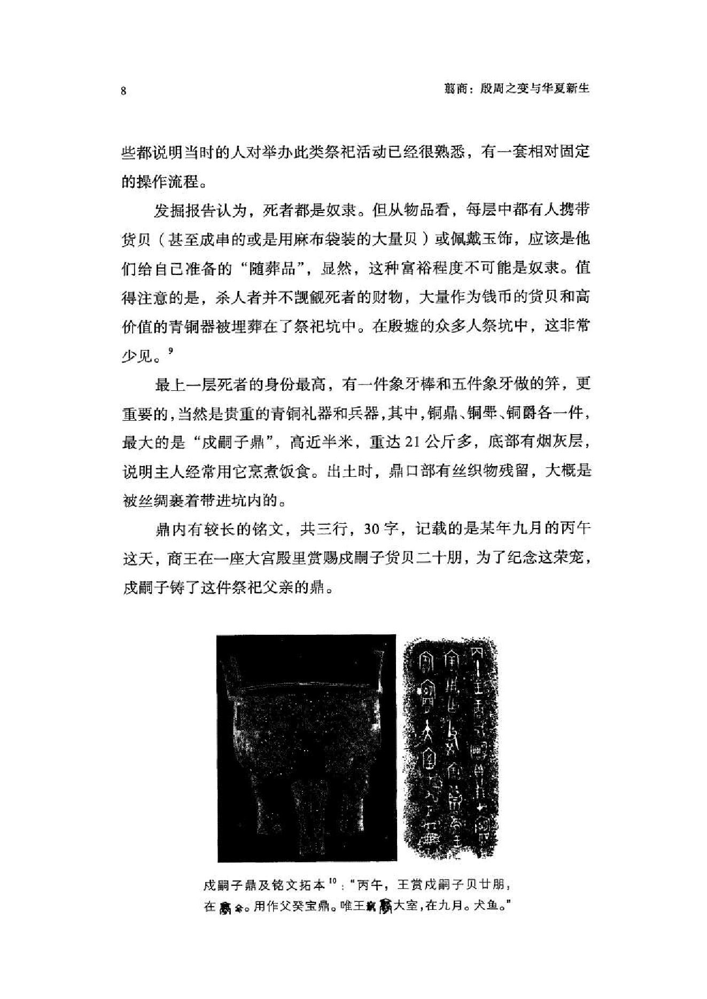
原书阅读器页 023原书物理 PDF 页 021印刷页 9
在《史记》等史书中，商纣王残暴，喜杀戮，曾诛杀多名贵族大臣。后冈H10祭祀坑不仅印证了传世文献的记载，而且还有很强的宗教色彩——按照商人传统的宗教理念，献祭人牲的身份越高，就越能取悦先王诸神。历代商王都谋求捕猎异族酋长“方伯”献祭，纣王则把商人贵族也列入了献祭名单。
纣王以暴君形象载入史册，但史书从未记录过其类似H10祭祀坑的残忍行径，哪怕是演义小说《封神榜》也无法想象这种情节。这也说明，周朝以后的人已经忘记了商朝的人祭风俗，倘若没有考古发现，我们可能永远无法触及上古时代的这种残酷。
打捞失落的文明
人祭的理念从何而来？这个问题很难回答。人祭宗教属于渺茫的、缺乏文献的远古时代，甚至大部分属于史前时代，后人早已对那个时代失忆，史书更没有保存下什么记录。
但近百年来的考古发现告诉我们，在新石器时代中晚期（约6000年前），黄河和长江流域的某些人群已经有疑似的、零星的人祭行为，后来则逐渐常见。它应该是早期人群的集体宗教行为，而且和部落间的战争密切相关。
4000余年前，若干地区的新石器人群开始汇聚成早期国家，山西陶寺和清凉寺以及陕西石窕等聚落遗址的人祭（人殉）规模逐渐变大，一直延续到夏朝-二里头古国。商朝建立后，人祭行为出现爆发式增长，到殷墟阶段（约公元前1300—前1046）登峰造极，不仅留下大量堆满尸骨的人祭坑，还有数千条甲骨卜辞记录。
比如，《合集》32093：“卯三羌二牛。卯五羌三牛“卯”是把人或牲畜对半剖开、悬挂的祭祀方式；“羌”是当时的晋陕土著人群，商王祭祀最常使用羌人。
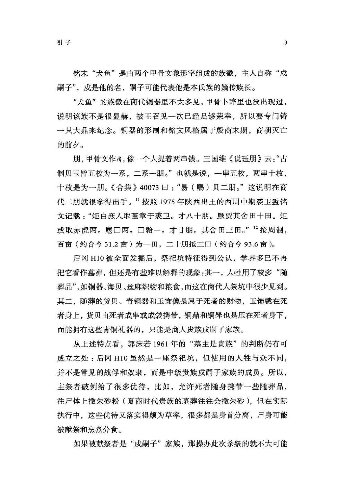
原书阅读器页 024原书物理 PDF 页 022印刷页 10
《合集》32093拓片[[fn:13]]（图）
“羌”的甲骨文造型是头顶羊角的人，有时还写成脖子被捆绑甚至拴在木桩上，表示他们已经被俘获。
人祭在商人生活中占多大比重？从参与范围来说，已发现的多数人祭遗址属于王室，说明它是商朝一种重要的国家宗教祀典。商代人祭又具有全民性，各级贵族以及有经济承受能力的民众也举行人祭，比如，从事制陶和冶铜的工匠群体尤其热衷。从殷都各聚落到遥远的殖民据点，各地的商人部族留下了众多人祭遗存。
还可以尝试对其量化，估算一下被献祭人牲占殷墟总人口的比例。截至目前，殷墟王陵区发现2000余座历代商王奉献的祭祀坑，已经发掘约1400座。[[fn:14]] 20世纪的发掘工作大都比较粗线条，人骨统计不太完整，根据2013年对旧坑的抽样核对，每座坑内有十名人牲。[[fn:15]] 保守起见，即使按平均每座坑埋有五人计，人牲数量也会超过一万名。[[fn:16]] 而这还只是王陵区批量祭祀坑中的人牲，王陵中的殉葬人、王宫区的各种人牲以及殷都各商人聚落的人牲和殉葬人等，因材料分散暂不列入统计。
先看这一万余名人牲在殷都总人口中的比例。祭祀坑的使用时间跨度约两百年，在这段时间，殷都累计总人口约一百万。[[fn:17]] 这样比较，正常死者和人牲的比例是100：1。但需要注意，考古已发现的人祭坑并不等于真实存在过的数量，被后世破坏以及尚未发现的规模无法估量。[[fn:18]] 所以，我们可以换个方式，用它和殷墟已发现的正常死者（墓葬）数量作对比。
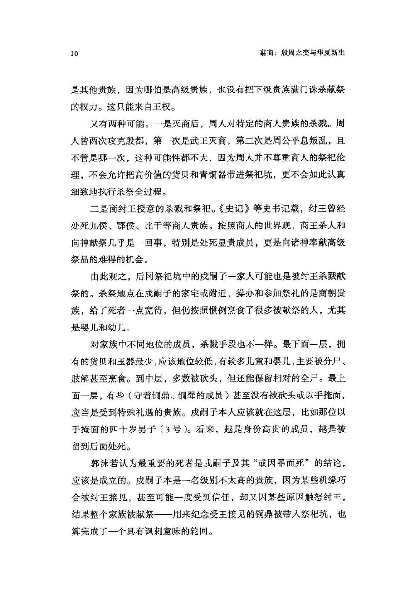
原书阅读器页 025原书物理 PDF 页 023印刷页 11
在殷墟范围内，已发现的正常墓葬约6500座，[[fn:19]] 代表正常死亡的6500人，那么，正常死者和人牲的比例是65：100，也就是说，在65名自由人背后，有100名被杀祭的人牲。当然，100：1和65：100代表的是两个极端，真实数值应当在这两者之间。毕竟，那是个后世人难以想象和复原的时代，但即便这样粗略的估测也已经让人心悸。
我们再把视野放宽一点，看看人祭在其他古代人群中的迹象。
很多古人类都有留下用人献祭的疑似迹象，但大都很零散，难以完全确定，[[fn:20]] 只在一些非常罕见的情况下才会留下比较清晰的现场。比如，希腊考古学家在地中海克里特岛发掘出约3600年前的一座石砌神殿，里面保留了正在进行人祭的一幕：低矮的祭坛上侧卧着一具人骨，是名十八九岁的男性，身高1.68米，呈被捆绑的侧身、屈膝姿势，一把青铜尖刀长约半米，刀尖向上刺入死者胸部。尸骨鉴定显示，死者的喉咙已被割开，旁边放着的是一个接血的陶罐。殿内还有三具人骨，其中一名男子三十七八岁，身高1.83米，手腕戴精致的石雕印章，还有一枚铁镶银戒指，估计是主持这场仪式的祭司。可能是因一场突如其来的大地震，神殿被毁，祭司和人牲被掩埋在了碎石之中。
另外，克里特岛的一座米诺斯文明晚期建筑出土有300多块人骨，属于一名八岁和一名十一岁的儿童：27块骨头上有着清晰且很深的刀痕；一起出土的还有带刀痕的羊骨，多件陶器，有些陶杯上绘着神像，其中一只陶罐里有贝壳、指骨和带刀痕的椎骨。发掘者推测，这是烹饪献祭后吃剩的骨头。[[fn:21]]
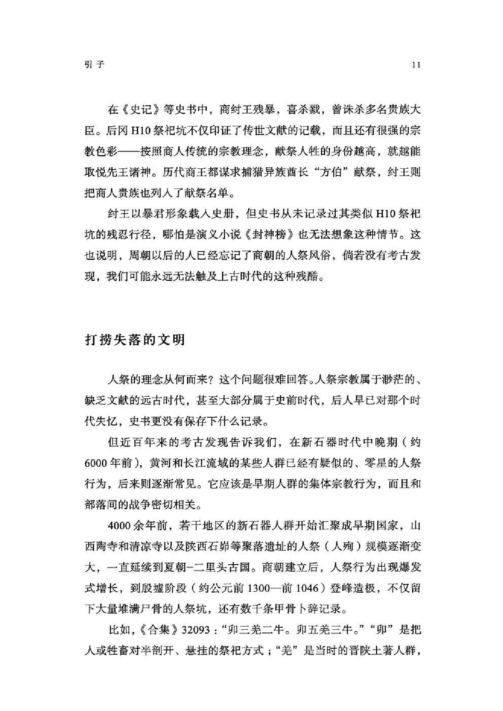
原书阅读器页 026原书物理 PDF 页 024印刷页 12
除了考古，有些文献中也有古代人祭的遗踪。比如《圣经•旧约》中就有用长子献祭的记载，虽然这种行为在《旧约》时代已经基本消亡，但它反映了中东地区的古老风习。
唐代的玄奘法师在印度求法期间，曾被乘船的土著俘获，土著每年秋天要捕捉一人杀祭“突伽天神”，而玄奘是这次最合适的人选；不过，玄奘靠他的诵经和传法能力逃脱了这次劫难。他口述的这段遭遇颇为生动，可能是后世妖魔想吃“唐僧肉”故事的母题：
于林中两岸各有十余船贼，鼓棹迎流，一时而出。船中惊扰，投河者数人，贼遂拥船向岸，令诸人解脱衣服，搜求珍宝。然彼群贼素事突伽天神，每于秋中觅一人质状端美，杀取肉血用以祠之，以祈嘉福。见法师仪容伟丽，体骨当之，相顾而喜曰：“我等祭神时欲将过，不能得人，今此沙门形貌淑美，杀用祠之，岂非吉也！”……于是贼帅遣人取水，于华林中治地设坛，和泥涂扫，令两人拔刀牵法师上坛，欲即挥刃。（《大慈恩寺三藏法师传》卷三）
西班牙人殖民美洲时，阿兹特克的人祭宗教正处在繁荣阶段。阿兹特克人主要是捕捉敌人敬献给神，献祭者也常分食人牲的肉，有些西班牙军人被俘之后的下场就是如此——当时的西班牙殖民者给后世留下了诸多第一手记录。[[fn:22]]
殷商的人祭则有甲骨卜辞的记录和考古发掘的祭祀遗迹，这可以帮助学者识别更早的人祭现象，比如，从新石器到夏和早商阶段，人祭遗存星星点点，规模都不太大，倘若没有殷商阶段的参照，很多会被当成特殊形式的墓葬。
同理，借助阿兹特克的人祭记录，可以识别中美洲更古老的玛雅文明中的人祭现象，虽然规模要比阿兹特克小得多。曾有人怀疑玛雅、阿兹特克文化和殷商同源，但这种可能性不大，因为它们的人祭形式大不一样。阿兹特克人祭的仪式感和表演性很强，有高大的石砌金字塔神庙，献祭仪式在金字塔顶端进行，尸体从台阶上扔下，由观众争夺分食。此外，玛雅和阿兹特克还留下了一些关于人祭的雕塑、浮雕和绘画。相比之下，从新石器到殷商，中国境内从未发现用于人祭的景观建筑。殷商人祭只有甲骨卜辞记载，从未有雕像、铸造、绘画等艺术表现。殷商和阿兹特克、玛雅共有的文化基因并不多。
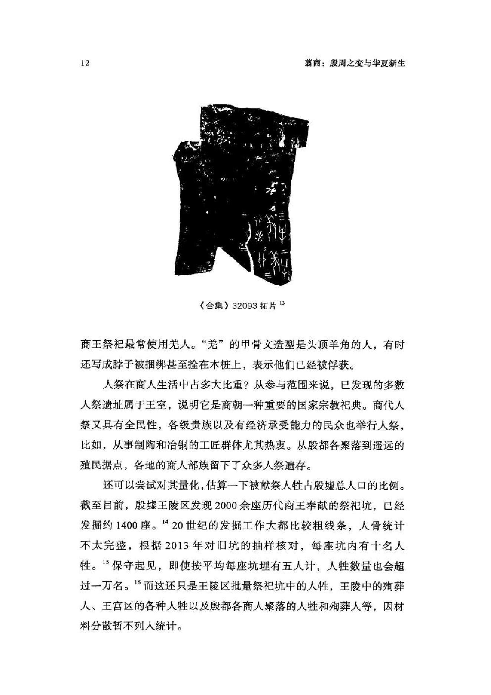
原书阅读器页 027原书物理 PDF 页 025印刷页 13
古罗马的角斗士产业存在于公元前2世纪到公元4世纪，它也有一点人祭宗教的渊源，但已经发展成世俗的大众娱乐产业，集表演、展示和景观建筑于一身，是人类文明旁逸斜出的一种现象。
中国古文明的重要特征是实用和低成本，不重视公共参与性。商王向鬼神献祭的宗教活动也是如此。当然，商人各聚落都有自己的人祭活动，可以满足民众的参与需求，但这些基层人祭场也没有发现用于人祭的景观建筑。
历史上，不同文明的刑罚示众活动也有这种区别。欧洲的十字架和绞刑架富有展示和仪式性，受刑者位于高处，便于被围观；古代中国有公开斩首示众的司法传统，但没有用于展示的相关建筑设施。
以上人祭宗教及角斗产业的消亡，都源于外来文化的干预。罗马人后来皈依了基督教，传统的阿兹特克宗教被西班牙殖民者的天主教所取代，殷商则与之不同：周灭商后，人祭被周人消除，但周人并未开创一种新的宗教，而是采用世俗的人文主义立场，与极端宗教行为保持距离，不允许其干预现实生活，所谓“敬鬼神而远之”。这奠定了后世中国的文化基础。
人祭场之外
周灭商和西周王朝建立之后，人祭现象迅速退场，并从人们的记忆和文字记录中彻底消失。本书在搜索上古文献的人祭线索时发现，几乎唯一正面记载过商代人祭现场的，是周文王创作的《易经》，也就是所谓六十四卦的卦爻辞。
文王周昌曾经在殷都生活，亲历过商王和商人民间的各种人祭仪式——这些都被他写进了《易经》，不仅有俘虏被屠杀献祭时的种种惨状，甚至有祭司穿着红色祭服的细节。不过，由于某些特殊的考虑，文王保留的记录非常含糊，只有借助商代考古和甲骨文才能解读出一部分。
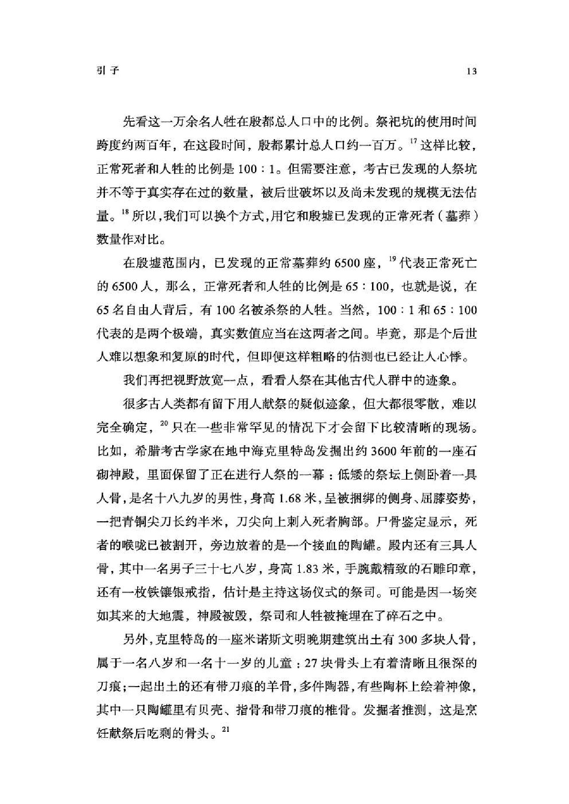
原书阅读器页 028原书物理 PDF 页 026印刷页 14
当然，在《易经》中，文王最关心的课题是如何灭商。但这是极度危险的，绝对不能言明。《易经》的《坤》卦六三爻曰：“含章可贞。或从王事，无成有终。”据文史大家高亨先生考证，“含章”就是“翦商”二字，所以“含章可贞”的意思是：“翦商之事，可以通过占卜（贞）来预测。[[fn:23]] 故而，《易经》的内容多是文王的翦商谋略，也正因此，这部分内容最为隐晦。
从龙山时代、夏代（洛阳二里头古城）到商代，是华夏文明的最初阶段，可以称之为“华夏旧文明”。在周族崛起并灭商后，周公旦一代人迅速废除了人祭宗教，并抹去了与此相关的文献与记忆，进而开创了和平、宽容的“华夏新文明”，一直延续至今。
最早对殷商这段尘封的往事进行追索考证的并非现代人，而是殷商后裔、儒家“六经”的编辑者孔子。孔子离纣王和周公的时代仅五百年，他编辑的“六经”保存了一些真相，但也有意地掩盖了另一些。本书认为，这是孔子在探究到真实历史之后做出的决定，他要继续周公的事业，重塑华夏文明。
根据本书正文所述，人祭行为在华夏文明的起源阶段非常活跃，这也引出了一个问题：当先民从部落时代走向早期国家和文明起源，战争和人祭是不是“必要的恶”？没有它们，是否人类就无法进入文明时代？
在研究殷商的人祭甲骨卜辞时，以色列考古学家吉迪•谢拉赫 (Gideon Shelach)曾经试图总结人祭繁荣的必要条件。他认为，当早期人类社会有了一定程度的复杂化，开始形成王权和统治阶层，但统治体系尚未完全成形和稳固时，统治者需要借用一种强大的机制来维持其权力，这就是人祭宗教和战俘献祭行为产生的基础。这个阶段，吉迪称之为“早期国家”或“复杂酋邦”。
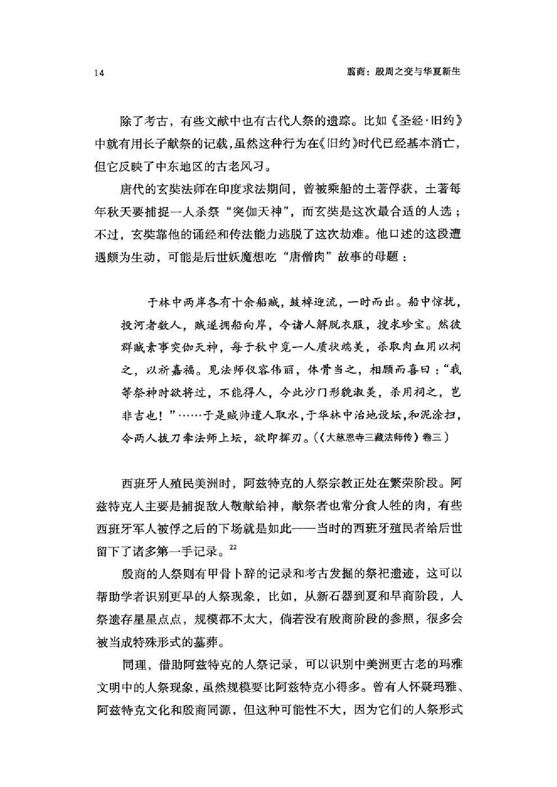
原书阅读器页 029原书物理 PDF 页 027印刷页 15
当然，殷商时代已经超越了“早期国家”，王权相当稳固，人祭数量也极高，所以吉迪补充说，一旦人祭体制化，统治者将不得不长期维持战争行动，以保证人牲的来源，这也是殷商一直努力捕捉羌人献祭的原因。[[fn:24]] 吉迪的论文并不涉及“早期国家”阶段，所以他的结论有些简单化，本书将在“人祭繁荣与宗教改革运动”一章对此进行分析。
人祭只是本书的部分内容，华夏文明初创期有很多重大现象需要关注，比如，兴起于河南洛阳的二里头-夏王朝，其农业基础并不是华北传统的旱作粟米，而是源自长江流域的水稻，显然，南方灌溉农业对中原文明有重要意义。换句话说，南方的水田灌溉农业虽然没能在本地生发出文明，却引发了华北的文明进程。
四千年前，华北地区的小型古国此起彼伏，但只有二里头成长为早期王朝。二里头—夏的政治疆域虽不大，也不以扩张见长，却偏偏是它初步解决了在国家内部实现稳定统治的难题，而这很可能源于青铜技术提供的支撑。
商与夏则完全不同。从建立初期，商就进入疯狂扩张模式，促发了很多超出我们认知的现象，比如，早商时代就出现了巨型仓储设施，其规模到殷墟、西周乃至春秋都无法超越。可以说，其超前“现代化”的程度足以比肩秦汉。
再比如，商人并非一直沉溺于人祭，商王室内部曾经有过不杀生的宗教改革，但此举引发了激烈的内战，致使商朝中期一度陷于解体，尔后又再度复兴。这其中，从异文化引进的马车技术成为广域王朝的统治基础。商人崇尚暴力和威权，这种文化性格在甲骨文字中有诸多反映，只不过在现代汉字中多数已被遗忘。
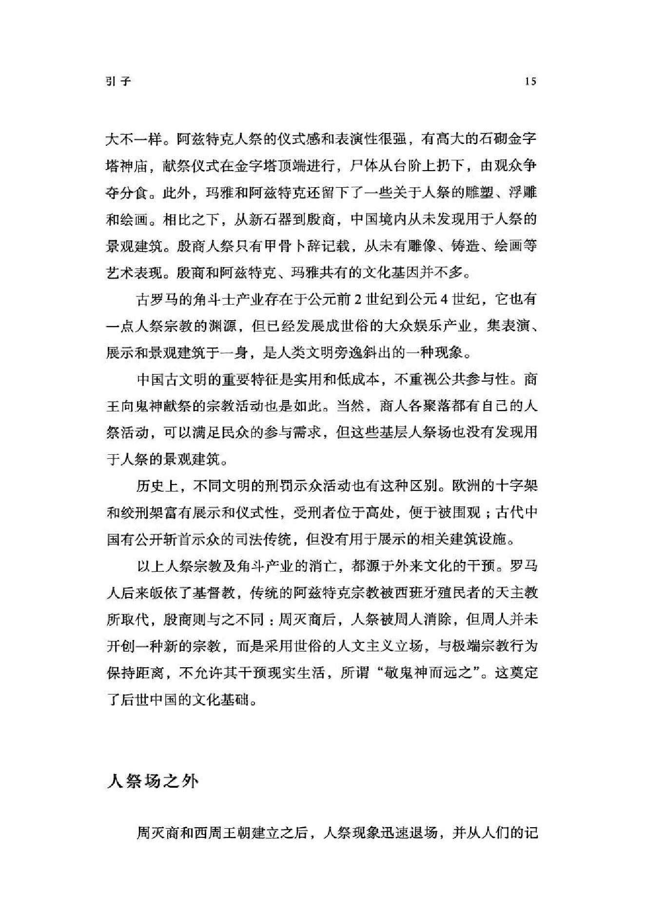
原书阅读器页 030原书物理 PDF 页 028印刷页 16
目前，借助考古认识上古社会的工作只是刚刚起步，还难以给那个茫昧幽远的时代归纳出简洁的“规律”。不仅如此，商纣王、文王周昌、武王周发、周公，甚至孔子，这些史书中的名人以及那些我们曾以为熟悉的先祖往事，有些也在考古发掘中变得越来越陌生，越来越难以理解。
也许，我们至今也还难以完全了解我们自己。考古，就犹如一面深埋地下的镜子，倒映出我们陌生的形象。
附录：上古人祭行为的分类
考古现场会发现各种非自然死亡（他杀）的尸骨，但不一定都属于人祭。
广义的人祭，可以界定为出于宗教理念而杀人奉献给神灵的行为。这里的神灵包含上帝（帝和上帝在商人甲骨文中多次出现）、各种自然神以及尊贵的死者亡灵。把人奉献给神灵的原理，可能是贡献食物，也可能是贡献仆役或性奴等。在人祭遗迹中，这些不同的目的都有所体现。
人祭主要表现为以下三种形式：
一，把人夯筑在地基内，用作建筑物的奠基，可称之为“人奠基”。其原理可能是把人奉献给土地之神，用以交换神对建筑物的护佑，以及通过施展巫术，被杀者可能也会变成守护建筑之鬼。
二，把人作为食物或仆役献祭给神或祖先之灵，这是狭义的“人祭”。
三，把人作为殉葬品埋在主人的墓穴内，可称之为“人殉”。其原理可能是当时的人们认为尊贵的人在死后会变为神灵，所以在去往神界的旅途中要给他（她）带上一些仆役和食物。
注释
1黄展岳：《古代人牲人殉通论》，文物出版社，2004年，第75页。这三座
多人祭祀坑分别是后冈H10、大司空村祭祀坑和小屯南地H33，其中，后冈H10和大司空村祭祀坑属于殷墟末期，小屯南地H33祭祀坑的时期则不详。相关发掘报告见中国社科院考古所《殷墟发掘报告（1958-1961）》，文物出版社，1987年，第265页；安阳市博物馆《安阳大司空村殷代杀祭坑》，《考古》1978年第1期；中国社科院考古所安阳工作队《1973年小屯南地发掘报告》，《考古学集刊》（第9集），科学出版社，1995年。
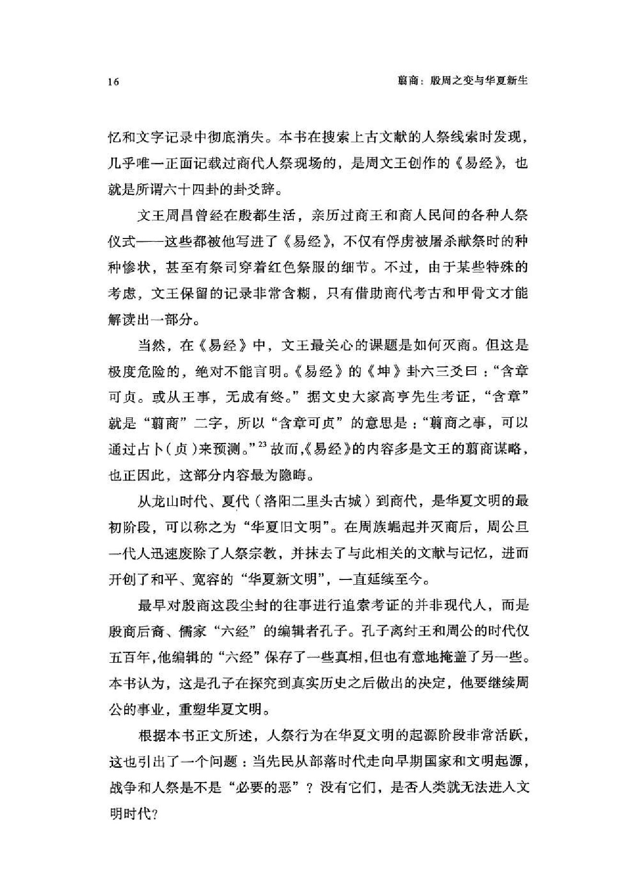
原书阅读器页 031原书物理 PDF 页 029印刷页 17
2郭沫若：《安阳圆坑墓中鼎铭考释》，《考古学报》1960年第1期。
3中国社科院考古所安阳发掘队：《1958—1959年殷墟发掘简报》，《考古》1961年第2期。
4中国社科院考古所：《殷墟发掘报告（1958-1961）》，第279页。以下关于H10祭祀坑的基本内容主要见于该书，不再详注。
5在考古发掘报告中，“H”是“灰坑”的简称，灰坑多数是古人的垃圾坑，但
也可能是储物窖穴、祭祀坑等，因为在发掘坑的表面时，考古工作者还不容易了解坑的具体性质，一般要发掘到底部才能判断坑的具体用途，所以多笼统命名为“灰坑”并编号，但最初赋予的编号一般不再修改。类似的简称，还有房子（F）、墓葬（M）和井（J）等。
6贝，甲骨文作C9，见《合集》11423正。《尚书•盘庚》：“兹予有乱政同位，具乃贝玉。”孔颖达疏：“贝者，水虫。古人取其甲以为货，如今之用钱然贝壳作钱已是习惯，东周以后，贝币才逐渐被各种金属货币取代，云南一些少数民族地区更是沿用贝币直到明代。
7杜金鹏：《安阳后冈殷代圆形葬坑及其相关问题》，《考古》2007年第6期。
后冈H10平面图出自该文，不再详注。
8中国社科院考古所安阳发掘队：《1958—1959年殷墟发掘简报》。
9在殷墟王陵区的祭祀坑中曾发现埋入铜器的，比如1976年发掘的M229，里面有大小两件铜鼎和两件陶器，还有一名被绑腿活埋的儿童。但这种祭祀坑数量很少，多数都是埋人牲。参见安阳亦工亦农文物考古短训班、中国社科院考古所安阳发掘队《安阳殷墟奴隶祭祀坑的发掘》，《考古》1977年第1期。
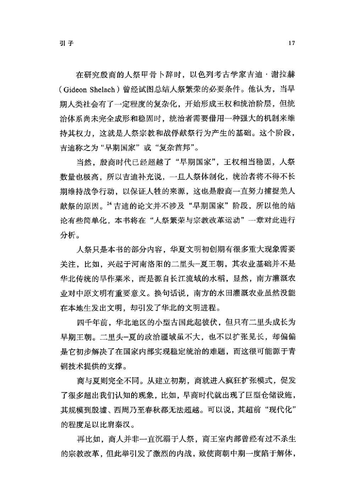
原书阅读器页 032原书物理 PDF 页 030印刷页 18
10 https://thepaper.cn/newsDetail_forward_10696914.
11当然，通货膨胀是必然的。到西周，据何尊记载，周成王有一次赏赐一位叫何的臣下三十朋：“何易（赐）贝卅朋。”（《集成》6014）至春秋时期，《诗经•小雅・菁菁者莪》曰：“既见君子，锡（赐）我百朋。”貌似已经动辄百朋了。
12裘卫孟（西周中期），《集成》8456。
13郭沫若：《甲骨文合集》，中华书局，1999年，32093条，以下简称《合集》。商代甲骨卜辞中的“羌「主要是山西、陕西地区的土著居民，这些人在周代逐渐汇聚成为华夏族。在后世的汉语中，“羌”字又演变成汉人对位居西方的少数族群的称谓，这和商代的“羌”已经不是同一种人。参见童恩正《谈甲骨文“羌”字并略论殷代的人祭制度》，《四川大学学报》（哲学社会科学版）1980年第3期；王平、顾彬《甲骨文与殷商人祭》，大象出版社，2007年，第87页。
14陈志达：《殷墟》，文物出版社，2007年，第119页。1934—1935年，在王陵区发掘祭祀坑1221座，是对祭祀坑发掘最集中的一次，但由于后来的战争和动荡，这批发掘成果未能出版报告，所以详情不得而知。
15唐际根、汤毓赞：《再论殷墟人祭坑与甲骨文中羌祭卜辞的相关性》，《中原文物》2014年第3期。
16李峰对王陵区祭祀坑中人牲的估测数字是三万：“至少有三万个人以这种方式在王陵区进行的宗教祭祀活动中被杀死。”参见李峰《早期中国社会和文化史概论》，刘晓霞译，台湾大学出版中心，2020年，第92页。
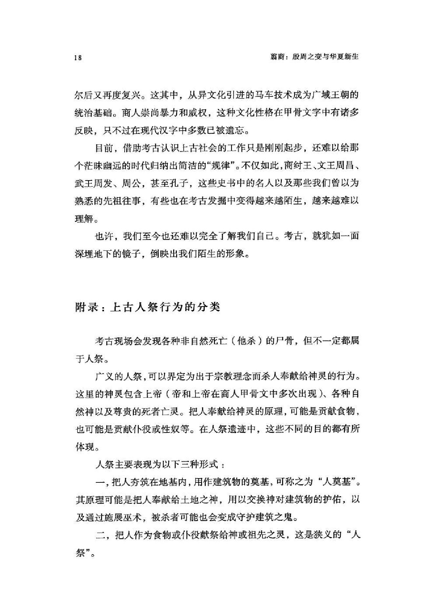
原书阅读器页 033原书物理 PDF 页 031印刷页 19
17考古人将二百多年跨度的殷墟分为四期，据宋镇豪估算的四期的人口规模分别是：一期不详，二期7万人，三期12万人，四期14.6万人。本书以此为基础推测，在王陵区投入使用的二百年里，殷墟生活过的人口总量约一百万人。参见宋镇豪《商代史论纲》，中国社会科学出版社，2011年，第136页。
18 2022年1月18日，“文博中国”在线发布《殷墟商王陵区新发现2个围沟、400余座祭祀坑》：此次新发现祭祀坑460座以上，多数用洛阳铲探出人骨骼，还有一座长28米、宽6米的长方形大坑。这些坑目前尚未正式发掘。
19关于殷墟已发现的商墓总数，两部出版时间相近的专著得出的数字稍有差距：宋镇豪的《商代史论纲》估计总数约8500座；陈志达的《殷墟》则估计约4400座，还有2000多座尚未整理的不包括在内。如果《殷墟》中已整理和未整理的两者相加，和《商代史论纲》的估计尚有2000座左右的差距。究其原因，应当是《殷墟》只统计“长方形竖穴墓”，即正式埋葬的成人墓，没有包括祭祀坑和灰坑葬（抛尸乱葬）；《商代史论纲》是在“人口”一章讨论墓地总数，意味着它把包含所有（成年）人口的埋葬形式都统计了进来，多出的这2000多座，正是当时所知王陵区祭祀坑的总数。所以，如果统计殷墟范围正常埋葬（而非被杀祭）的成年人数量，应以陈志达《殷墟》的数字为准，可暂定为6500人左右。参见宋镇豪《商代史论纲》，第136页；陈志达《殷墟》，文物出版社，2007年，第106页。
20 ［英］史蒂文•米森：《史前人类简史》，王晨译，北京日报出版社，2021年。
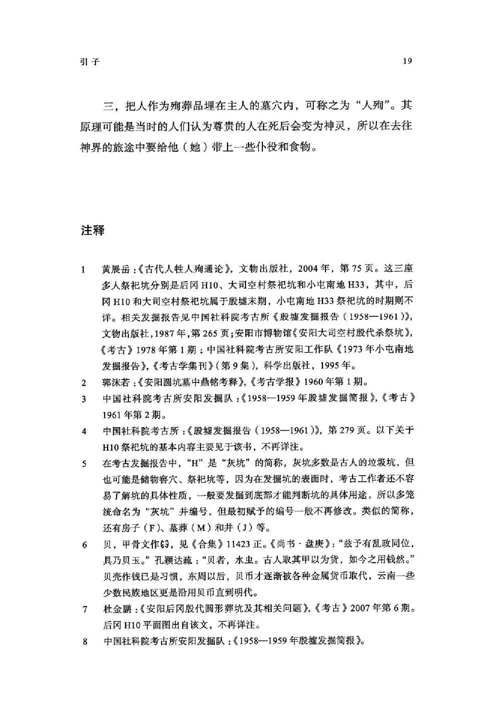
原书阅读器页 034原书物理 PDF 页 032印刷页 20
21 ［美］戴尔・布朗主编：《爱琴海沿岸的奇异王国》，李旭影译，华夏出版社，2002年，第94、98页。
22 ［西班牙］贝尔纳尔・迪亚斯•德尔•卡斯蒂略：《征服新西班牙信史》，江禾、林光译，商务印书馆，1991年。
23高亨释为：“乃武王克商之兆，所占之事，自为可行，故曰含章可贞。”参见高亨《周易古经今注》，中华书局，1984年，第167页。高亨认为，这是周武王姬发灭商时的占卜辞。其实，它很可能在周文王时期就已经有了，是对未来之事的占算。
24 Gideon Shelach，“The Qiang and the Question of Human Sacrifice in the Late Shang Period." Asian Perspectives，Spring 1996，pp. 1-26.
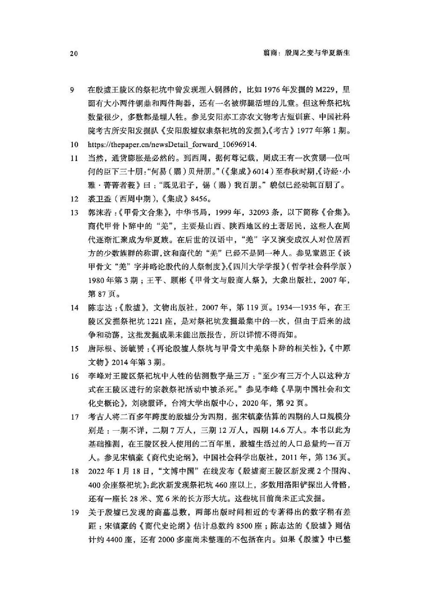
原书阅读器页 035原书物理 PDF 页 033印刷页 21
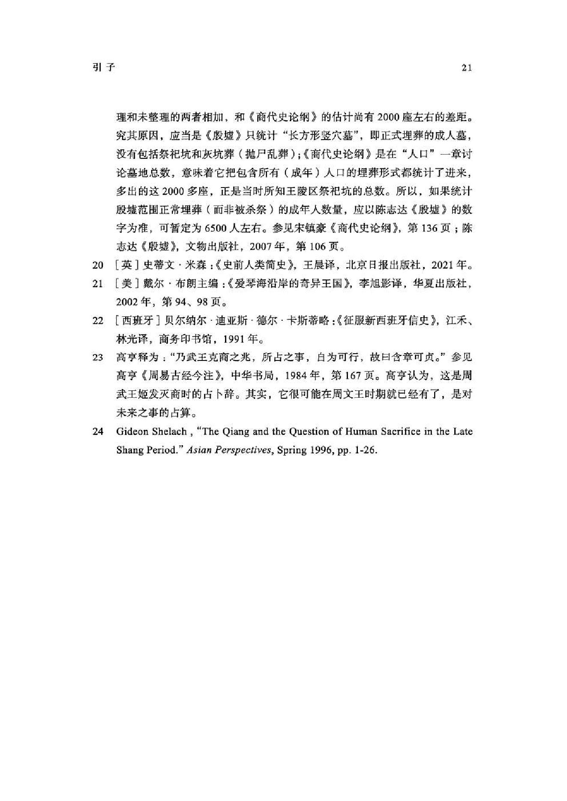
原书阅读器页 036原书物理 PDF 页 034印刷页 22
编辑札记
标记
先在正文中选择文字，再输入拼音；可用“拼音；简注”。